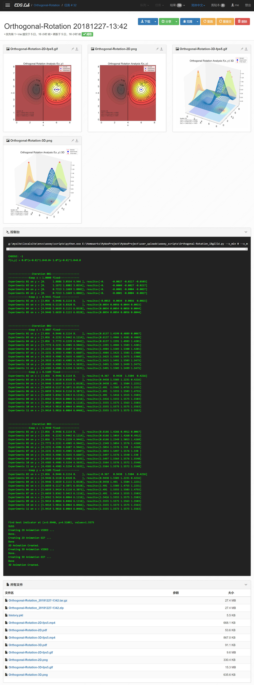
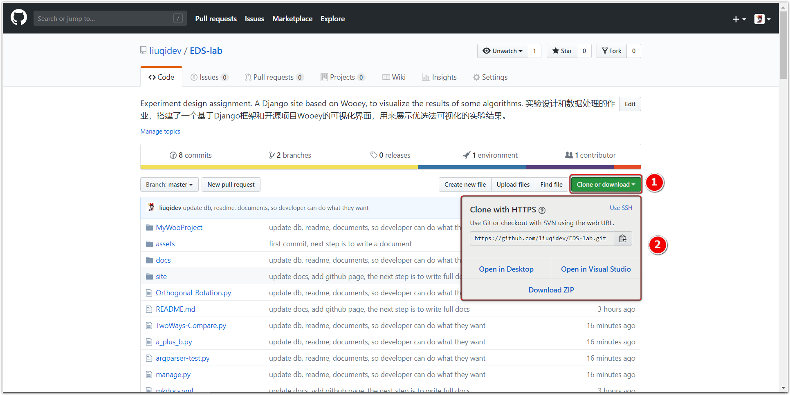
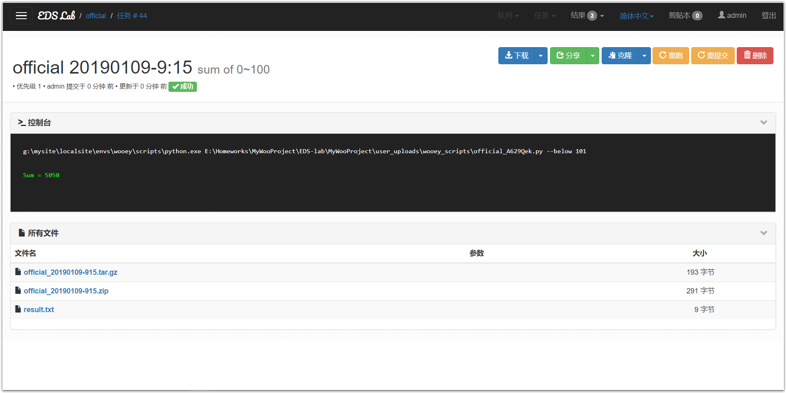
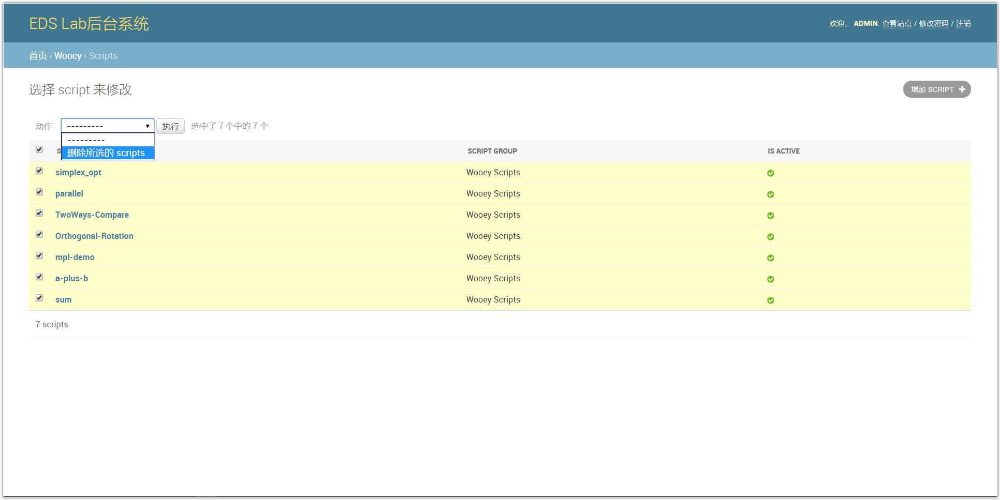
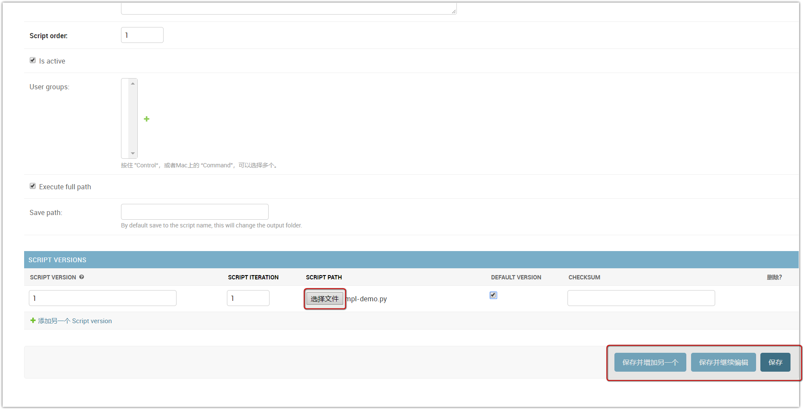
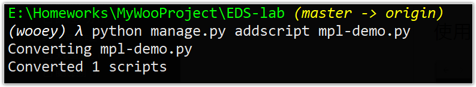

EDS Lab 使用手册
EDS Lab 使用手册UI功能示例部分结果 文档证书快速开始0. 安装Python和相关依赖1. 运行使用* 创建虚拟环境（非必须，推荐）2. 下载工程代码3. 安装相关依赖4. 运行项目5.本地查看项目6. 运行实验脚本管理和运行1.创建超级用户2. 注册、登录后台管理系统3. 用户管理4. 脚本管理5. 增加脚本6. 运行脚本 功能特性相关技术和工具常见问题Q1. UnicodeDecodeError: 'gbk' codec can't decode byte 0x80 in position xxx: illegal multibyte sequenceQ2. 如何为脚本增加参数控制？Q4. 如何生成的视频还有.gif图？Q5. 系统如何将python脚本执行的结果显示到前端的？如何修改？变更日志
实验设计和数据处理的作业，搭建了一个基于Django框架和，开源项目Wooey的可视化界面，用来展示优选法可视化的实验结果。
注意：本手册的word版本由相关软件导出，可能在格式问题，推荐查看其他格式（pdf, html）以及在线文档https://eds-lab.readthedocs.io/zh/latest/ 。
UI
功能示例

部分结果
| 实验方法和过程可视化结果（2维） | 实验方法和过程可视化结果（3维） |
|---|---|
| 2D | 3D |
双因素选升法2D | 双因素选升法3D |
 | |
双因素平行线法2D | |
单纯形法2D |
注：图标题并非几种方法的标准英文翻译。
文档
证书
BSD
快速开始
0. 安装Python和相关依赖
Python- 推荐python3.6及以上pip- 推荐18.1及以上- 其他：见文件
requirements.txt，内容如下，安装请见后文：
xxxxxxxxxxDjangowooeydjango-sslifydjango-storagesdjango-celerydjango-autoslugbotowaitresspsycopg2collectfasthoncho
1. 运行使用
* 创建虚拟环境（非必须，推荐）
为了防止项目工程的依赖和用户自带的python环境相冲突，例如python版本不一致。建议为工程创建虚拟环境，创建方法见virtualenv, 这里推荐使用virtualenvwrapper，一个更快捷的virtualenv的封装来创建python3的虚拟环境。
例如，使用virtualenvwrapper创建了名称为wooey的python3环境，然后在这个环境下运行本项目。

2. 下载工程代码

下载地址：EDS-lab
下载后解压，进入到EDS-lab路径下。
3. 安装相关依赖
使用pip安装相关依赖，requirements.txt。
xxxxxxxxxxpip install -r requirements.txt
4. 运行项目
对于windows，在当前路径（即manage.py所在的路径）下，分别启动两个终端：

终端1输入：
xxxxxxxxxxcelery -A MyWooProject worker --pool=eventlet -l info效果入上图所示。

终端2输入：
xxxxxxxxxxpython manage.py runserver 0:8000注：端口号可以任意指定。
对于Linux和其他操作系统，请查看这里。
5.本地查看项目
通过步骤5就构建了一个本地服务器来运行本工程。

使用浏览器，输入http://localhost:8000/,即可查看工程。
6. 运行实验脚本


点击脚本名称，输入相关参数，即可运行。例如上图是创建计算[0, 100)以内所有正数和的任务，点击提交，任务会被添加到任务队列中，等待片刻，结果输出到界面，结果产生的文件以列表形式陈列于下方。
运行其他脚本过程类似。
管理和运行
本项目的后台系统是基于Django的，这里已经为您创建了一个用户：
- 用户名 admin
- 密码 ADMIN12345678
你可以使用上述用户名和密码来执行相关管理工作，其中包括创建新的用户。
1.创建超级用户
超级用户即系统管理员，这里和所有django项目一样，在后台中输入createsuperuser进行管理员的创建。

2. 注册、登录后台管理系统


两种方式登录：
- 在用户界面右上角输入用户名和密码
- 或者在地址栏中输入
ip:端口号/admin，输入用户名或密码登录。
系统也支持注册新用户并登录。
3. 用户管理

如上图所示可在后台进行用户管理。
4. 脚本管理



5. 增加脚本


有两种方式来增加脚本。第一种方式通过后台来添加（不推荐，没办法添加绝对路径，checksum无法计算，从而无法添加成功）。

另外一种通过终端来添加，在终端中输入:
xxxxxxxxxxpython manage.py addscript [path-to-script/]script.py即addscript后接脚本的路径，出现Concerted 1 scripts表明添加成功。
特别注意： 添加的脚本中不能含有中文，包括注释中都不能有中文等其他字符。


进入后台管理系统中，发现脚本被成功添加了进来，点击进入后可以修改脚本信息（非源程序）。

查看站点，发现有新的脚本被添加进来。
6. 运行脚本


运行新脚本，结果如上图。
功能特性

- 可以运行任何python脚本
- 脚本参数可调整
- 脚本可重复运行，可查看管理历史结果
- 良好的交互，美观的界面
- 良好的算法可视化效果
- 方便的后台管理
- 基于B/S，部署后随处可访问
- 支持多用户访问，运行结果互不干扰
- 完全开源，方便扩展开发
- 运行结果文件轻松下载
相关技术和工具

常见问题
Q1. UnicodeDecodeError: 'gbk' codec can't decode byte 0x80 in position xxx: illegal multibyte sequence
上面表示脚本中含有gbk编码的字符，这里需要注意，添加的脚本中不能有中文（这是一个bug，目前还没修复），中文不能存在于python程序的任何地方，包括注释中。所以需要检查代码，将相应的字符删除或者替换成英文。
Q2. 如何为脚本增加参数控制？
程序通过argparse来进行参数调节和解析，下方是一个示例：
xxxxxxxxxx// a_plus_b.pyimport argparseimport sys# parser and argumentsparser = argparse.ArgumentParser(description='a plus b problem')parser.add_argument('--a', help='first num', type=int, default=0)parser.add_argument('--b', help='second num', type=int, default=0)def main(): args = parser.parse_args() a = args.a b = args.b sum = a + b print('{0} + {1} = {2}'.format(a, b, sum)) return 0if __name__ == "__main__": sys.exit(main()) #main()你可以通过命令行来运行，
xxxxxxxxxxpython a_plus_b.py>>> 0python a_plus_b.py --a 1 --b 2>>> 3项目中更改脚本参数的逻辑和上面一致。
关于argparse，查看更多。
Q3. 算法可视化中的动画是如何做到的？
动画使用的是Matplotlib中的animation。
例如本项目中双因素旋升法，二维动画生成，核心代码如下，
xxxxxxxxxxdef init2D(): line.set_data([], []) point.set_data([], []) value_display.set_text('') return line, point, value_displaydef animate2D(i): line.set_data(track_x[i], track_y[i]) point.set_data(track_x[i], track_y[i]) # point.set_data(track_x[i], track_y[i], track_z[i]) value_display.set_text('Iteration: ' + str(i + 1) + '\n' r'$x(\alpha_1)= $' '{0:.4f}'.format( track_x[i][1]) + r' $x(\alpha_2)= $' '{0:.4f}'.format( track_x[i][2]) + '\n' r'$y(\alpha_1)= $' '{0:.4f}'.format( track_y[i][1]) + r' $y(\alpha_2)= $' '{0:.4f}'.format( track_y[i][2]) + '\n' r'$z(\alpha_1)= $' '{0:.4f}'.format( track_z[i][1]) + r' $z(\alpha_2)= $' '{0:.4f}'.format( track_z[i][2]) ) return line, point, value_displayxxxxxxxxxx# 2Dfig = plt.figure(figsize=(8, 8))# ax1 = Axes3D(fig)ax1 = plt.gca()ax1 = snapshot2D(ax1)line, = ax1.plot([], [], 'r', label='Domain', lw=1.5)point, = ax1.plot([], [], 'bo', c='b', label='Experiments')value_display = ax1.text(0.02, 0.08, '', transform=ax1.transAxes)ax1.legend(loc=1)ax1.grid(False)anim2D = animation.FuncAnimation(fig, animate2D, init_func=init2D, frames=len(track_x), interval=500, repeat_delay=80, blit=True)Writer2D = animation.writers['ffmpeg']FPS_2D = 5writer2D = Writer2D(fps=FPS_2D, metadata=dict(artist='L'), bitrate=1800)# anim.save('Orthogonal-Rotation-004.gif',writer='imagemagick', fps=60)print('Creating 2D Animation VIDEO ...')anim2D.save('Orthogonal-Rotation-2D-fps{0}.mp4'.format(FPS_2D), writer=writer2D)print('Done.\nCreating 2D Animation GIF ...')anim2D.save('Orthogonal-Rotation-2D-fps{0}.gif'.format(FPS_2D), writer='imagemagick', fps=FPS_2D)print('Done\n2D Animation Created.')plt.savefig('Orthogonal-Rotation-2D.pdf')plt.savefig('Orthogonal-Rotation-2D.png')其中snapshot2D为生成函数的等高线图，将ax（matplotlib中的坐标轴类）的对象传回，再在该轴上绘制其他图像，也可以同时绘制。
xxxxxxxxxxdef snapshot2D(ax): a = np.linspace(scope_x[0] - 0.2, scope_x[1] + 0.2, num_divs) b = np.linspace(scope_y[0] - 0.2, scope_y[1] + 0.2, num_divs) x, y = np.meshgrid(a, b) # z=func(x,y) # ax.contour(x, y,z, levels=np.logspace(-3,3,25), cmap='jet') ax.contourf(x, y, func(x, y), 50, cmap=cm.hot, alpha=0.7) CS = ax.contour(x, y, func(x, y), 15, colors='k') ax.clabel(CS, inline=True, fontsize=13) ax.set_xlabel(r'x', fontdict={'fontsize': 18, 'fontweight': 'medium'}) ax.set_ylabel(r'y', fontdict={'fontsize': 18, 'fontweight': 'medium'}) ax.set_title(r'Orthogonal Rotation Analysis $f(x,y)$', fontdict={'fontsize': 20, 'fontweight': 'medium'}) ax.xaxis.set_tick_params(labelsize=18) ax.yaxis.set_tick_params(labelsize=18) # ax.plot(final_x, final_y, marker='*', c='r', markersize=15) ax.scatter(final_x, final_y, marker='*', c='r', s=50, label='Final Result') return ax
3D的动画生成逻辑相同。
xxxxxxxxxxdef init3D(): line.set_data([], []) line.set_3d_properties([]) point.set_data([], []) point.set_3d_properties([]) point1.set_data([], []) point1.set_3d_properties([]) point2.set_data([], []) point2.set_3d_properties([]) point3.set_data([], []) point3.set_3d_properties([]) display_value.set_text('') # return line, point, display_value return line, point, point1, point2, point3, display_valuedef animate3D(i): line.set_data(track_x[i], track_y[i]) line.set_3d_properties(track_z[i]) point.set_data(track_x[i], track_y[i]) point.set_3d_properties(track_z[i]) point1.set_data(track_x[i], track_y[i]) point1.set_3d_properties([-0.5] * len(track_x[i])) # point2.set_data(scope_x[0]* len(track_x[i]), track_y[i]) # a bug here # point2.set_3d_properties(track_z[i]) point2.set_data([scope_x[0] - 0.3] * len(track_x[i]), track_y[i]) point2.set_3d_properties(track_z[i]) point3.set_data(track_x[i], [scope_y[1] + 0.3] * len(track_x[i])) point3.set_3d_properties(track_z[i]) display_value.set_text('Iteration: ' + str(i + 1) + '\n' r'$x(\alpha_1)= $' '{0:.4f}'.format(track_x[i][1]) + r' $x(\alpha_2)= $' '{0:.4f}'.format( track_x[i][2]) + '\n' r'$y(\alpha_1)= $' '{0:.4f}'.format(track_y[i][1]) + r' $y(\alpha_2)= $' '{0:.4f}'.format( track_y[i][2]) + '\n' r'$z(\alpha_1)= $' '{0:.4f}'.format(track_z[i][1]) + r' $z(\alpha_2)= $' '{0:.4f}'.format( track_z[i][2])) # return line, point, display_value return line, point, point1, point2, point3, display_valuexxxxxxxxxx# 3Dfig1 = plt.figure(figsize=(8, 8))ax2 = Axes3D(fig1)ax2 = snapshot3D(ax2)line, = ax2.plot([], [], [], 'r-', label='Domain', lw=1.5)point, = ax2.plot([], [], [], 'bo', markersize=10, label='Experiments') # on the surfacepoint1, = ax2.plot([], [], [], 'ro', markersize=10, alpha=0.2) # projection to zpoint2, = ax2.plot([], [], [], 'ro', markersize=10, alpha=0.2) # projection to xpoint3, = ax2.plot([], [], [], 'ro', markersize=10, alpha=0.2) # projection to ydisplay_value = ax2.text(scope_x[1], scope_y[1], final_z + 0.5, '', transform=ax2.transAxes)ax2.grid(False)ax2.legend(loc=1)anim = animation.FuncAnimation(fig1, animate3D, init_func=init3D, frames=len(track_x), interval=1000, repeat_delay=80, blit=True)Writer3D = animation.writers['ffmpeg']FPS_3D = 5writer3D = Writer3D(fps=FPS_3D, metadata=dict(artist='L'), bitrate=1800)# anim.save('Orthogonal-Rotation-004.gif',writer='imagemagick', fps=6)print('Creating 3D Animation VIDEO ...')anim.save('Orthogonal-Rotation-3D-fps{0}.mp4'.format(FPS_3D), writer=writer3D)print('Done.\nCreating 3D Animation GIF ...')anim.save('Orthogonal-Rotation-3D-fps{0}.gif'.format(FPS_3D), writer='imagemagick', fps=FPS_3D)print('Done\n3D Animation Created.')plt.savefig('Orthogonal-Rotation-3D.pdf')plt.savefig('Orthogonal-Rotation-3D.png')# plt.show()其中`snapshot3D:
xxxxxxxxxxdef snapshot3D(ax): a = np.linspace(scope_x[0] - 0.2, scope_x[1] + 0.2, num_divs) b = np.linspace(scope_y[0] - 0.2, scope_y[1] + 0.2, num_divs) X, Y = np.meshgrid(a, b) Z = func(X, Y) # ax.plot_surface(X, Y, Z, rstride=1, cstride=1, edgecolor='none', cmap='jet') ax.plot_wireframe(X, Y, Z, rstride=1, cstride=1, cmap='jet') cset = ax.contourf(X, Y, Z, zdir='z', offset=-0.5, cmap='jet', alpha=0.2) cset = ax.contourf(X, Y, Z, zdir='x', offset=scope_x[0] - 0.3, cmap='jet', alpha=0.2) cset = ax.contourf(X, Y, Z, zdir='y', offset=scope_y[1] + 0.3, cmap='jet', alpha=0.2) # CS = ax.contour(x, y, func(x, y), colors='k') # ax.clabel(CS, inline=True, fontsize=13) ax.set_xlabel(r'X', fontdict={'fontsize': 18, 'fontweight': 'medium'}) ax.set_ylabel(r'Y', fontdict={'fontsize': 18, 'fontweight': 'medium'}) ax.set_ylabel(r'Z', fontdict={'fontsize': 18, 'fontweight': 'medium'}) ax.set_title(r'Orthogonal Rotation Analysis $f(x,y)$ 3D', fontdict={'fontsize': 20, 'fontweight': 'medium'}) ax.xaxis.set_tick_params(labelsize=18) ax.yaxis.set_tick_params(labelsize=18) # ax.plot([final_x], [final_y], [final_z], marker='*', c='r', markersize=20, label='Final result') ax.scatter([final_x], [final_y], [final_z], marker='*', c='r', s=80, label='Final result') # ax.plot(track_x[0], track_y[0], c='b', marker='o') return ax其余算法可视化的逻辑类似，总体为：
- 弄清要解决的问题
- 设计实现相应算法
- 将数据过程中的任意点进行可视化
- 将算法执行过程以动画形式表现出来
更多的关于代码，后续会以博客文章的形式进行讲解，不在本项目的讨论范围之中。
Q4. 如何生成的视频还有.gif图？
gif和mp3分别用到了imagemagick和ffmpeg。
关于imagemagick，点击这里获取更多帮助。
关于ffmepeg，点击这里获取更多信息。
Q5. 系统如何将python脚本执行的结果显示到前端的？如何修改？
前端采用HTML+JavaScript+CSS来控制，后端是SQLite数据库。将结果文件显示到前端利用的是Django框架的ORM（对象关系映射）机制和MVT（模型，视图，模板）设计模式（即经典的MVC设计模式），view层通过从Model中取相应的结果文件的地址，以字典的形式传入到Template层，经过前端的渲染，从而得到显示效果。故要单单修改前端风格，布局什么的，只需要修改template即可，修改其他则需要更具view的功能来进行相应的修改。
变更日志
| 变更日期 | 版本 | 新特性 | 修订者 |
|---|---|---|---|
| 2019-01-09 | V0.2（代号：炎） | 实现了对于优选法的可视化，构建了基于python web框架的可视化用户界面。 | 魔法师L |